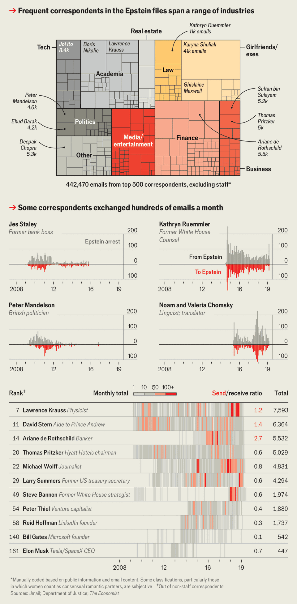

International | A nightmare, quantified
Inside Jeffrey Epstein’s network
What 1.4m emails reveal about America’s most notorious sex offender
February 12th 2026

FOR NEARLY a decade information about the life of Jeffrey Epstein has emerged in dribs and drabs. Now, in the wake of an American law passed in November compelling the release of prosecutors’ files, the trickle has turned into a torrent. On January 30th the Justice Department published over 3m pages of documents. The release has claimed scalps, including Brad Karp, head of a large law firm in New York; Miroslav Lajcak, Slovakia’s national-security adviser; and Jack Lang, boss of the Arab World Institute, a Parisian cultural centre. More are likely. Following complaints by members of Congress, the Justice Department has begun exposing names it had blacked out.
The archive is too big for anyone to have read even a fraction. Fortunately, a group of software engineers has turned the PDFs into a format that is easier to analyse. Using Reducto, an AI tool, they have identified which files contained emails; extracted the listed senders, recipients, dates, subjects and message bodies; and posted them on a website (Jmail.world). In total, the group processed 1.4m emails, finishing its work on February 11th. The Economist has collaborated with it to assign each message to unique individuals regardless of spellings or email addresses, and researched the backgrounds of the 500 people who appear most often. We then used a large language model (LLM) to score each email chain on how disturbing its content would be to a typical reader, creating an “alarm index”.

Most of Epstein’s correspondence was with his staff, service providers and business contacts. People who worked for or with him made up a third of the top 500 names and accounted for nearly 60% of his messages. Chief among them were Lesley Groff, his assistant; Richard Kahn, his accountant; and Larry Visoski, his pilot. Homes in New York and Palm Beach, and his private Caribbean island, required armies of contractors and housekeepers.
The rest of the emails, however, depict a remarkable network. The top 500 correspondents span industries. Some 19% of messages were with financiers; 10% with scientists or doctors; 8% with people in media, entertainment or public relations; 7% with technologists; 6% each for lawyers, politicians, academics and other businessfolk; and 5% with property magnates. The share of contacts in finance peaked at 25% in 2014 and then fell as those in academia and law rose. Most were in America, though Epstein kept ties with Britain, France, Germany, Nordic countries, Gulf states and even a Venezuelan oil trader.
He did not waste time on middle managers. A quarter of his top non-staff contacts have a Wikipedia page. He traded emails with at least 18 current or former billionaires, including Peter Thiel and Elon Musk; celebrities like Woody Allen and Deepak Chopra; and political figures such as Ehud Barak, a former Israeli prime minister. Most back-and-forths were balanced, with similar numbers of emails sent and received; an exception was Bill Gates, whom Epstein bombarded despite few responses. (Mr Gates was happy to meet Epstein on a number of occasions, however.)
Many relationships went far deeper than the occasional cocktail-party photograph. Epstein and Kathryn Ruemmler, White House counsel under President Barack Obama, swapped 11,300 emails from 2014 to 2019, with at least one direct message on 70% of days. Ariane de Rothschild, a banking billionaire, sent or received 5,500 emails; Larry Summers, a former treasury secretary, 4,300. In some cases Epstein grew close to family members: he was in touch with both Noam Chomsky, a linguist, and his wife, Valeria, and chatted with Soon-Yi Previn, Woody Allen’s wife, more than with Mr Allen himself.
The vast majority of Epstein’s emails contain nothing more worrisome than typos. But buried in a million mundane missives are hundreds that our LLM flagged as disturbing. There are sexual messages between Epstein and women with redacted names, often involving requests for nude photos. In some cases, there are also references to avoiding parents. Epstein reviews a draft agreement “governed by French law” with an “apprentice”, requiring “sexual games”. One message from a redacted sender reads: “Thank you for a fun night ...Your littlest girl was a little naughty.”
People in Epstein’s orbit frequently claim ignorance. An email in 2010 from the brother-in-law of Ghislaine Maxwell, an accomplice of Epstein, lends some credence to the idea. It cites an effort to remove details from his Wikipedia page and Google. Some messages with famous friends are boorish; others talk strategies for his criminal cases, including a few where he seems to admit to paying for sex. Prosecutors should prioritise the handful where associates, including rich friends with unredacted names, discuss evenings with “girls” he arranged for them to meet.
But most often flagged emails were with young women or little-known accomplices. (A typical example: “Sometimes I meet nice girls, I will let you know if I have someone.”) This pattern may be because our LLM failed to spot incriminating messages sent to prominent contacts or because redactions are protecting people. Epstein was also careful. When discussing women with Steve Tisch, owner of an NFL team, whom Epstein calls “a new...shared interest friend”, Epstein requests a phone call because “I dont like records of these conversations.” (Mr Tisch says he regrets his relationship with Epstein and that all emails concerned “adult women”.)
The latest release leaves questions about Epstein unanswered, including how he secured a sweetheart plea deal in 2008 and killed himself in jail despite surveillance. Still, some are already satisfied. Like a normal inbox, Jmail is sorted from newest to oldest messages. The very first email is thus one that arrived three days after Epstein’s death, from someone called Cody Rudland, whose name does not appear earlier. “You are dead,” reads the subject, followed by the body: “Lol good riddance.” ■